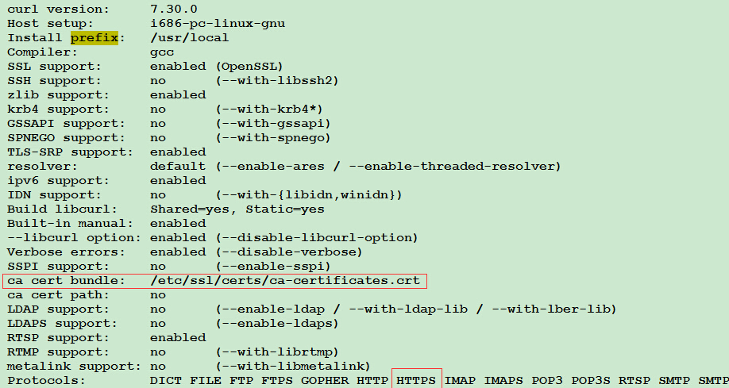

安装curl并开启ssl(https)支持
ubuntu系统下想要使用curl-ssl只能是自己下载源码进行安装，因为开启ssl(–with-ssl)需要openssl的库文件。默认ubuntu安装的openssl未包含库(lib)文件和头文件(include)。使用curl下载https文件的时候,会报以下错误：
- Protocol https not supported or disabled in libcurl
- Unsupport protocol
查看当前的curl支持哪些协议
curl -V
# curl 7.54.1 (x86_64-pc-linux-gnu) libcurl/7.54.1 OpenSSL/1.0.2g
# Release-Date: 2017-06-14
# Protocols: dict file ftp ftps gopher http https imap imaps pop3 pop3s rtsp smb smbs smtp smtps telnet tftp
# Features: IPv6 Largefile NTLM NTLM_WB SSL TLS-SRP UnixSockets HTTPS-proxy
Protocols那一行会显示，是否支持https,ftps等等
如果想要curl支持https首先要安装包含库文件和头文件的openssl！
安装openssl
到openssl的官网https://www.openssl.org/source/下载源码压缩包,这里以openssl-1.0.2l.tar.gz为例子
sudo tar zvxf openssl-1.0.2l.tar.gz
# 解压缩包
cd openssl-1.0.2l
./config enable-shared --prefix=/usr/local/ssl
# 开启enable-shared生成库文件，--prefix指定ssl安装路径
# 在cli输出界面，会看到输出如下一行“SSL support:enabled (OpenSSL)”
sudo make
sudo make test
sudo make install
安装证书
如要使用ssl必须要安装证书，方可使用。
sudo apt install ca-certificates
证书安装路径为/usr/lib/ssl
重新配置并安装curl
curl官网下载unbuntu包https://curl.haxx.se/download.html,如下图所示
sudo tar zxvf curl-7.54.1.tar.gz
cd curl-7.54.1
./configure --with-ssl=/usr/local/ssl --prefix=/usr/local/curl-7.54.1
# 其中--with-ssl的路径是上一步安装的openssl的路径
然后屏幕会输出如下图信息： 
# 安装
sudo make install
# 查看curl是否已经支持了https?
curl -V